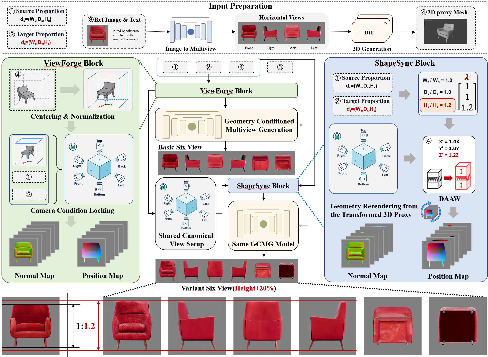

DimRatio
Dimension-conditioned industrial multi-view generation through shared 3D geometry, detail-aware axis deformation, and fixed-camera geometric guidance.
Pipeline

Standard View Completion
Constructs a shared proxy representation and completes missing canonical views.
Constructs a shared proxy representation and completes missing canonical views.
Detail-Aware Axis Warp
Meets the requested extent while allocating deformation away from salient geometric details.
Meets the requested extent while allocating deformation away from salient geometric details.
Fixed Shared Cameras
Uses one projection envelope for the source and every permitted dimensional condition.
Uses one projection envelope for the source and every permitted dimensional condition.
Runnable verification
The included CPU demo uses a procedural chair mesh, so no benchmark or commercial product asset is redistributed.
pip install -r requirements.txt python run_demo.py --axis width --scale 1.2 --output outputs/width_p20 pytest -q

The basic and dimension-controlled views use identical standard-view cameras and a shared projection range.
Review-time release scope
This artifact contains the editable pipeline figure and minimal executable geometry/camera implementation. The paper benchmark, complete model integration, large-scale experiment code, and full qualitative results will be released after publication.